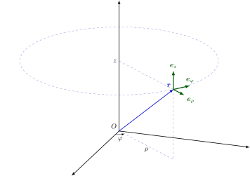

数学符号表
本文规定了 OI Wiki 中数学符号的推荐写法，并给出了一些应用范例．
本文参考了 GB/T 3102.11-1993、ISO 80000-2:2019 和《具体数学》的符号表修订，故基本与国内通行教材的符号体系和 OI 场景的惯用符号体系兼容．
符号的 LaTeX 写法请参考 本文章的源代码
数理逻辑
| 编号 | 符号，表达式 | 意义，等同表述 | 备注与示例 |
|---|---|---|---|
| n1.1 | 𝑝 ∧𝑞p∧q | 𝑝p 和 𝑞q 的合取 | 𝑝p 与 𝑞q. |
| n1.2 | 𝑝 ∨𝑞p∨q | 𝑝p 和 𝑞q 的析取 | 𝑝p 或 𝑞q; |
此处的 "或" 是包含的，即若 𝑝p，𝑞q 中有一个为真陈述，则 𝑝 ∨𝑞p∨q 为真． n1.3| ¬𝑝¬p| 𝑝p 的否定| 非 𝑝p. n1.4| 𝑝 ⟹ 𝑞p⟹q| 𝑝p 蕴含 𝑞q; 若 𝑝p 为真，则 𝑞q 为真| 𝑞 ⟸ 𝑝q⟸p 和 𝑝 ⟹ 𝑞p⟹q 同义． n1.5| 𝑝 ⟺ 𝑞p⟺q| 𝑝p 等价于 𝑞q| (𝑝 ⟹ 𝑞) ∧(𝑞 ⟹ 𝑝)(p⟹q)∧(q⟹p) 和 𝑝 ⟺ 𝑞p⟺q 同义． n1.6| (∀ 𝑥 ∈𝐴) 𝑝(𝑥)(∀ x∈A) p(x)| 对 𝐴A 中所有的 𝑥x, 命题 𝑝(𝑥)p(x) 均为真| 如果从上下文中可以得知考虑的是哪个集合 𝐴A, 可以使用记号 (∀ 𝑥) 𝑝(𝑥)(∀ x) p(x). ∀∀ 称为全称量词． 𝑥 ∈𝐴x∈A 的含义见 n2.1. n1.7| (∃ 𝑥 ∈𝐴) 𝑝(𝑥)(∃ x∈A) p(x)| 存在一个属于 𝐴A 的 𝑥x 使得 𝑝(𝑥)p(x) 为真| 如果从上下文中可以得知考虑的是哪个集合 𝐴A, 可以使用记号 (∃ 𝑥) 𝑝(𝑥)(∃ x) p(x). ∃∃ 称为存在量词． 𝑥 ∈𝐴x∈A 的含义见 n2.1. (∃! 𝑥) 𝑝(𝑥)(∃! x) p(x)（唯一量词）用来表示恰有一个 𝑥x 使得 𝑝(𝑥)p(x) 为真． ∃!∃! 也可以写作 ∃1∃1.
集合论
| 编号 | 符号，表达式 | 意义，等同表述 | 备注与示例 |
|---|---|---|---|
| n2.1 | 𝑥 ∈𝐴x∈A | 𝑥x 属于 𝐴A，𝑥x 是集合 𝐴A 中的元素 | 𝐴 ∋𝑥A∋x 和 𝑥 ∈𝐴x∈A 同义． |
| n2.2 | 𝑦 ∉𝐴y∉A | 𝑦y 不属于 𝐴A，𝑦y 不是集合 𝐴A 中的元素 |
n2.3| {𝑥1,𝑥2,…,𝑥𝑛}{x1,x2,…,xn}| 含元素 𝑥1,𝑥2,…,𝑥𝑛x1,x2,…,xn 的集合| 也可写作 {𝑥𝑖 | 𝑖 ∈𝐼}{xi | i∈I}, 其中 𝐼I 表示指标集． n2.4| {𝑥 ∈𝐴 | 𝑝(𝑥)}{x∈A | p(x)}| 𝐴A 中使命题 𝑝(𝑥)p(x) 为真的所有元素组成的集合| 例如 {𝑥 ∈𝐑 | 𝑥 ≥5}{x∈R | x≥5}; 如果从上下文中可以得知考虑的是哪个集合 𝐴A，可以使用符号 {𝑥 | 𝑝(𝑥)}{x | p(x)}（如在只考虑实数集时可使用 {𝑥 | 𝑥 ≥5}{x | x≥5}） || 也可以使用冒号替代，如 {𝑥 ∈𝐴 :𝑝(𝑥)}{x∈A:p(x)}. n2.5| card𝐴cardA; |𝐴||A|; #𝐴#A| 𝐴A 中的元素个数，𝐴A 的基数| n2.6| ∅∅| 空集| 不应使用 ∅∅. n2.7| 𝐵 ⊆𝐴B⊆A| 𝐵B 包含于 𝐴A 中，𝐵B 是 𝐴A 的子集| 𝐵B 的每个元素都属于 𝐴A. ⊂⊂ 也可用于该含义，但请参阅 n2.8 的说明． 𝐴 ⊇𝐵A⊇B 和 𝐵 ⊆𝐴B⊆A 同义． n2.8| 𝐵 ⊂𝐴B⊂A| 𝐵B 真包含于 𝐴A 中，𝐵B 是 𝐴A 的真子集| 𝐵B 的每个元素都属于 𝐴A, 且 𝐴A 中至少有一个元素不属于 𝐵B. 若 ⊂⊂ 的含义取 n2.7, 则 n2.8 对应的符号应使用 ⊊⊊. 𝐴 ⊃𝐵A⊃B 与 𝐵 ⊂𝐴B⊂A 同义． n2.9| 𝐴 ∪𝐵A∪B| 𝐴A 和 𝐵B 的并集| 𝐴 ∪𝐵 :={𝑥 | 𝑥 ∈𝐴 ∨𝑥 ∈𝐵}A∪B:={x | x∈A∨x∈B}; :=:= 的定义参见 n4.3 n2.10| 𝐴 ∩𝐵A∩B| 𝐴A 和 𝐵B 的交集| 𝐴 ∩𝐵 :={𝑥 | 𝑥 ∈𝐴 ∧𝑥 ∈𝐵}A∩B:={x | x∈A∧x∈B}; :=:= 的定义参见 n4.3 n2.11| 𝑛⋃𝑖=1𝐴𝑖⋃i=1nAi| 集合 𝐴1,𝐴2,…,𝐴𝑛A1,A2,…,An 的并集| 𝑛⋃𝑖=1𝐴𝑖 =𝐴1 ∪𝐴2 ∪⋯ ∪𝐴𝑛⋃i=1nAi=A1∪A2∪⋯∪An; 也可使用 ⋃𝑛𝑖=1⋃i=1n，⋃𝑖∈𝐼⋃i∈I，⋃𝑖∈𝐼⋃i∈I, 其中 𝐼I 表示指标集； 进一步，令 𝑃(𝑖)P(i) 为某个与 𝑖i 相关的命题，可使用 ⋃𝑃(𝑖)𝐴𝑖⋃P(i)Ai 表示所有使 𝑃(𝑖)P(i) 为真的 𝑖i 对应的 𝐴𝑖Ai 之并集 n2.12| 𝑛⋂𝑖=1𝐴𝑖⋂i=1nAi| 集合 𝐴1,𝐴2,…,𝐴𝑛A1,A2,…,An 的交集| 𝑛⋂𝑖=1𝐴𝑖 =𝐴1 ∩𝐴2 ∩⋯ ∩𝐴𝑛⋂i=1nAi=A1∩A2∩⋯∩An; 也可使用 ⋂𝑛𝑖=1⋂i=1n，⋂𝑖∈𝐼⋂i∈I，⋂𝑖∈𝐼⋂i∈I, 其中 𝐼I 表示指标集； 进一步，令 𝑃(𝑖)P(i) 为某个与 𝑖i 相关的命题，可使用 ⋂𝑃(𝑖)𝐴𝑖⋂P(i)Ai 表示所有使 𝑃(𝑖)P(i) 为真的 𝑖i 对应的 𝐴𝑖Ai 之交集 n2.13| 𝐴 ∖𝐵A∖B| 𝐴A 和 𝐵B 的差集| 𝐴 ∖𝐵 ={𝑥 | 𝑥 ∈𝐴 ∧𝑥 ∉𝐵}A∖B={x | x∈A∧x∉B}; 不应使用 𝐴 −𝐵A−B; 当 𝐵B 是 𝐴A 的子集时也可使用 ∁𝐴𝐵∁AB, 如果从上下文中可以得知考虑的是哪个集合 𝐴A，则 𝐴A 可以省略． 不引起歧义的情况下也可使用 ――𝐵B― 表示集合 𝐵B 的补集． n2.14| (𝑎,𝑏)(a,b)| 有序数对 𝑎a，𝑏b; 有序偶 𝑎a，𝑏b| (𝑎,𝑏) =(𝑐,𝑑)(a,b)=(c,d) 当且仅当 𝑎 =𝑐a=c 且 𝑏 =𝑑b=d. n2.15| (𝑎1,𝑎2,…,𝑎𝑛)(a1,a2,…,an)| 有序 𝑛n 元组| 参见 n2.14. n2.16| 𝐴 ×𝐵A×B| 集合 𝐴A 和 𝐵B 的笛卡尔积| 𝐴 ×𝐵 ={(𝑥,𝑦) | 𝑥 ∈𝐴 ∧𝑦 ∈𝐵}A×B={(x,y) | x∈A∧y∈B}. n2.17| 𝑛∏𝑖=1𝐴𝑖∏i=1nAi| 集合 𝐴1,𝐴2,…,𝐴𝑛A1,A2,…,An 的笛卡尔积| 𝑛∏𝑖=1𝐴𝑖 ={(𝑥1,𝑥2,…,𝑥𝑛) | 𝑥1 ∈𝐴1,𝑥2 ∈𝐴2,…,𝑥𝑛 ∈𝐴𝑛}∏i=1nAi={(x1,x2,…,xn) | x1∈A1,x2∈A2,…,xn∈An}; 𝐴 ×𝐴 ×⋯ ×𝐴A×A×⋯×A 记为 𝐴𝑛An, 其中 𝑛n 是乘积中的因子数； 该符号的另一种用法参见 n6.8 n2.18| id𝐴idA| 𝐴 ×𝐴A×A 的对角集| id𝐴 ={(𝑥,𝑥) | 𝑥 ∈𝐴}idA={(x,x) | x∈A}; 如果从上下文中可以得知考虑的是哪个集合 𝐴A, 则 𝐴A 可以省略． n2.19| 𝟏𝐴1A| 指示函数| 𝟏𝐴(𝑎) =[𝑎 ∈𝐴]1A(a)=[a∈A]，[ ⋅][⋅] 的定义参见 n6.24． n2.20| P(𝐴)P(A); 2𝐴2A| 幂集| P(𝐴) ={𝑆 :𝑆 ⊆𝐴}P(A)={S:S⊆A}
标准数集和区间
| 编号 | 符号，表达式 | 意义，等同表述 | 备注与示例 |
|---|---|---|---|
| n3.1 | 𝐍N | 自然数集 | 𝐍 ={0,1,2,3,…}N={0,1,2,3,…}; |
𝐍∗ =𝐍+ ={1,2,3,…}N∗=N+={1,2,3,…}; 可用如下方式添加其他限制：𝐍>5 ={𝑛 ∈𝐍 | 𝑛 >5}N>5={n∈N | n>5}; 也可使用 ℕN. n3.2| 𝐙Z| 整数集| 𝐙∗ =𝐙+ ={𝑛 ∈𝐙 | 𝑛 ≠0}Z∗=Z+={n∈Z | n≠0}; 可用如下方式添加其他限制：𝐙>−3 ={𝑛 ∈𝐙 | 𝑛 > −3}Z>−3={n∈Z | n>−3}; 也可使用 ℤZ. n3.3| 𝐐Q| 有理数集| 𝐐∗ =𝐐+ ={𝑟 ∈𝐐 | 𝑟 ≠0}Q∗=Q+={r∈Q | r≠0}; 可用如下方式添加其他限制：𝐐<0 ={𝑟 ∈𝐐 | 𝑟 <0}Q<0={r∈Q | r<0}; 也可使用 ℚQ. n3.4| 𝐑R| 实数集| 𝐑∗ =𝐑+ ={𝑥 ∈𝐑 | 𝑥 ≠0}R∗=R+={x∈R | x≠0}; 可用如下方式添加其他限制：𝐑>0 ={𝑥 ∈𝐑 | 𝑥 >0}R>0={x∈R | x>0}; 也可使用 ℝR. n3.5| 𝐂C| 复数集| 𝐂∗ =𝐂+ ={𝑧 ∈𝐂 | 𝑧 ≠0}C∗=C+={z∈C | z≠0}; 也可使用 ℂC. n3.6| 𝐏P| （正）素数集| 𝐏 ={2,3,5,7,11,13,17,…}P={2,3,5,7,11,13,17,…}; 也可使用 ℙP. n3.7| [𝑎,𝑏][a,b]| 𝑎a 到 𝑏b 的闭区间| [𝑎,𝑏] ={𝑥 ∈𝐑 | 𝑎 ≤𝑥 ≤𝑏}[a,b]={x∈R | a≤x≤b}. n3.8| (𝑎,𝑏](a,b]| 𝑎a 到 𝑏b 的左开右闭区间| (𝑎,𝑏] ={𝑥 ∈𝐑 | 𝑎 <𝑥 ≤𝑏}(a,b]={x∈R | a<x≤b}; ( −∞,𝑏] ={𝑥 ∈𝐑 | 𝑥 ≤𝑏}(−∞,b]={x∈R | x≤b}. n3.9| [𝑎,𝑏)[a,b)| 𝑎a 到 𝑏b 的左闭右开区间| [𝑎,𝑏) ={𝑥 ∈𝐑 | 𝑎 ≤𝑥 <𝑏}[a,b)={x∈R | a≤x<b}; [𝑎, +∞) ={𝑥 ∈𝐑 | 𝑎 ≤𝑥}[a,+∞)={x∈R | a≤x}. n3.10| (𝑎,𝑏)(a,b)| 𝑎a 到 𝑏b 的开区间| (𝑎,𝑏) ={𝑥 ∈𝐑 | 𝑎 <𝑥 <𝑏}(a,b)={x∈R | a<x<b}; ( −∞,𝑏) ={𝑥 ∈𝐑 | 𝑥 <𝑏}(−∞,b)={x∈R | x<b}; (𝑎, +∞) ={𝑥 ∈𝐑 | 𝑎 <𝑥}(a,+∞)={x∈R | a<x}.
关系
| 编号 | 符号，表达式 | 意义，等同表述 | 备注与示例 |
|---|---|---|---|
| n4.1 | 𝑎 =𝑏a=b | 𝑎a 等于 𝑏b | ≡≡ 用于强调某等式是恒等式 |
该符号的另一个含义参见 n4.18. n4.2| 𝑎 ≠𝑏a≠b| 𝑎a 不等于 𝑏b| n4.3| 𝑎 :=𝑏a:=b| 𝑎a 定义为 𝑏b| 参见 n2.9,n2.10 n4.4| 𝑎 ≈𝑏a≈b| 𝑎a 约等于 𝑏b| 不排除相等． n4.5| 𝑎 ≃𝑏a≃b| 𝑎a 渐近等于 𝑏b| 例如： 当 𝑥 →𝑎x→a 时，1sin(𝑥−𝑎) ≃1𝑥−𝑎1sin(x−a)≃1x−a; 𝑥 →𝑎x→a 的含义参见 n4.15. n4.6| 𝑎 ∝𝑏a∝b| 𝑎a 与 𝑏b 成正比| 也可使用 𝑎 ∼𝑏a∼b. ∼∼ 也用于表示等价关系． n4.7| 𝑀 ≅𝑁M≅N| 𝑀M 与 𝑁N 全等| 当 𝑀M 和 𝑁N 是点集（几何图形）时． 该符号也用于表示代数结构的同构． n4.8| 𝑎 <𝑏a<b| 𝑎a 小于 𝑏b| n4.9| 𝑏 >𝑎b>a| 𝑏b 大于 𝑎a| n4.10| 𝑎 ≤𝑏a≤b| 𝑎a 小于等于 𝑏b| n4.11| 𝑏 ≥𝑎b≥a| 𝑏b 大于等于 𝑎a| n4.12| 𝑎 ≪𝑏a≪b| 𝑎a 远小于 𝑏b| n4.13| 𝑏 ≫𝑎b≫a| 𝑏b 远大于 𝑎a| n4.14| ∞∞| 无穷大| 该符号 不 是数字． 也可以使用 +∞+∞，−∞−∞. n4.15| 𝑥 →𝑎x→a| 𝑥x 趋近于 𝑎a| 一般出现在极限表达式中． 𝑎a 也可以为 ∞∞，+∞+∞，−∞−∞. n4.16| 𝑚 ∣𝑛m∣n| 𝑚m 整除 𝑛n| 对整数 𝑚m，𝑛n: (∃ 𝑘 ∈𝐙) 𝑚 ⋅𝑘 =𝑛(∃ k∈Z) m⋅k=n. n4.17| 𝑚 ⟂𝑛m⟂n| 𝑚m 与 𝑛n 互质| 对整数 𝑚m，𝑛n: (∄ 𝑘 ∈𝐙>1) (𝑘 ∣𝑚) ∧(𝑘 ∣𝑛)(∄ k∈Z>1) (k∣m)∧(k∣n); 该符号的另一种用法参见 n5.2 n4.18| 𝑛 ≡𝑘(mod𝑚)n≡k(modm)| 𝑛n 模 𝑚m 与 𝑘k 同余| 对整数 𝑛n，𝑘k，𝑚m: 𝑚 ∣(𝑛 −𝑘)m∣(n−k); 不要与 n4.1 中提到的相混淆．
初等几何学
| 编号 | 符号，表达式 | 意义，等同表述 | 备注与示例 |
|---|---|---|---|
| n5.1 | ∥∥ | 平行 | |
| n5.2 | ⟂⟂ | 垂直 | 该符号的另一种用法参见 n4.17 |
| n5.3 | ∠∠ | （平面）角 | |
| n5.4 | ―――ABAB― | 线段 ABAB | |
| n5.5 | ⟶ABAB→ | 有向线段 ABAB | |
| n5.6 | 𝑑(A,B)d(A,B) | 点 AA 和 BB 之间的距离 | 即 ―――ABAB― 的长度． |
运算符
| 编号 | 符号，表达式 | 意义，等同表述 | 备注与示例 |
|---|---|---|---|
| n6.1 | 𝑎 +𝑏a+b | 𝑎a 加 𝑏b | |
| n6.2 | 𝑎 −𝑏a−b | 𝑎a 减 𝑏b | |
| n6.3 | 𝑎 ±𝑏a±b | 𝑎a 加或减 𝑏b | |
| n6.4 | 𝑎 ∓𝑏a∓b | 𝑎a 减或加 𝑏b | −(𝑎 ±𝑏) = −𝑎 ∓𝑏−(a±b)=−a∓b. |
n6.5| 𝑎 ⋅𝑏a⋅b; 𝑎 ×𝑏a×b; 𝑎𝑏ab| 𝑎a 乘 𝑏b| 若出现小数点，则应只使用 ××; 部分用例参见 n2.16,n2.17,n14.11,n14.12 n6.6| 𝑎𝑏ab; 𝑎/𝑏a/b; 𝑎 :𝑏a:b| 𝑎a 除以 𝑏b| 𝑎𝑏 =𝑎 ⋅𝑏−1ab=a⋅b−1; 可用 :: 表示同一量纲的数值的比率． 不应使用 ÷÷. n6.7| 𝑛∑𝑖=1𝑎𝑖∑i=1nai| 𝑎1 +𝑎2 +⋯ +𝑎𝑛a1+a2+⋯+an| 也可使用 ∑𝑛𝑖=1𝑎𝑖∑i=1nai，∑𝑖𝑎𝑖∑iai，∑𝑖𝑎𝑖∑iai，∑𝑎𝑖∑ai； 令 𝑃(𝑖)P(i) 为某个与 𝑖i 相关的命题，可使用 ∑𝑃(𝑖)𝑎𝑖∑P(i)ai 表示所有使 𝑃(𝑖)P(i) 为真的 𝑖i 对应的 𝑎𝑖ai 之和． n6.8| 𝑛∏𝑖=1𝑎𝑖∏i=1nai| 𝑎1 ⋅𝑎2 ⋅⋯ ⋅𝑎𝑛a1⋅a2⋅⋯⋅an| 也可使用 ∏𝑛𝑖=1𝑎𝑖∏i=1nai，∏𝑖𝑎𝑖∏iai，∏𝑖𝑎𝑖∏iai，∏𝑎𝑖∏ai； 令 𝑃(𝑖)P(i) 为某个与 𝑖i 相关的命题，可使用 ∏𝑃(𝑖)𝑎𝑖∏P(i)ai 表示所有使 𝑃(𝑖)P(i) 为真的 𝑖i 对应的 𝑎𝑖ai 之积； 该符号的另一种用法参见 n2.17 n6.9| 𝑎𝑝ap| 𝑎a 的 𝑝p 次幂| n6.10| 𝑎1/2a1/2; √𝑎a| 𝑎a 的 1/21/2 次方，𝑎a 的平方根| 应避免使用 √𝑎a. n6.11| 𝑎1/𝑛a1/n; 𝑛√𝑎an| 𝑎a 的 1/𝑛1/n 次幂，𝑎a 的 𝑛n 次根| 应避免使用 𝑛√𝑎na. n6.12| ¯𝑥x¯; ¯𝑥𝑎x¯a| 𝑥x 的算数均值| 其他均值有： 调和均值 ¯𝑥ℎx¯h; 几何均值 ¯𝑥𝑔x¯g; 二次均值/均方根 ¯𝑥𝑞x¯q 或 ¯𝑥𝑟𝑚𝑠x¯rms. ¯𝑥x¯ 也用于表示复数 𝑥x 的共轭，参见 n11.6. n6.13| sgn𝑎sgna| 𝑎a 的符号函数| 对实数 𝑎a: sgn𝑎 =1 (𝑎 >0)sgna=1(a>0); sgn𝑎 = −1 (𝑎 <0)sgna=−1(a<0); sgn0 =0sgn0=0; 参见 n11.7. n6.14| inf𝑀infM| 𝑀M 的下确界| 小于等于非空集合 𝑀M 中元素的最大上界． n6.15| sup𝑀supM| 𝑀M 的上确界| 大于等于非空集合 𝑀M 中元素的最小下界． n6.16| |𝑎||a|| 𝑎a 的绝对值| 也可使用 abs𝑎absa. n6.17| ⌊𝑎⌋⌊a⌋| 向下取整 小于等于实数 𝑎a 的最大整数| 例如： ⌊2.4⌋ =2⌊2.4⌋=2; ⌊ −2.4⌋ = −3⌊−2.4⌋=−3. n6.18| ⌈𝑎⌉⌈a⌉| 向上取整 大于等于实数 𝑎a 的最小整数| 例如： ⌈2.4⌉ =3⌈2.4⌉=3; ⌈ −2.4⌉ = −2⌈−2.4⌉=−2. n6.19| min(𝑎,𝑏)min(a,b); min{𝑎,𝑏}min{a,b}| 𝑎a 和 𝑏b 的最小值| 可推广到有限集中． 要表示无限集中的最小值建议使用 infinf, 参见 n6.14 n6.20| max(𝑎,𝑏)max(a,b); max{𝑎,𝑏}max{a,b}| 𝑎a 和 𝑏b 的最大值| 可推广到有限集中． 要表示无限集中的最大值建议使用 supsup, 参见 n6.15 n6.21| 𝑛mod𝑚nmodm| 𝑛n 模 𝑚m 的余数| 对正整数 𝑛n，𝑚m: (∃ 𝑞 ∈𝐍,𝑟 ∈[0,𝑚)) 𝑛 =𝑞𝑚 +𝑟(∃ q∈N,r∈[0,m)) n=qm+r; 其中 𝑟 =𝑛mod𝑚r=nmodm. n6.22| gcd(𝑎,𝑏)gcd(a,b); gcd{𝑎,𝑏}gcd{a,b}| 整数 𝑎a 和 𝑏b 的最大公因数| 可推广到有限集中．不引起歧义的情况下可写为 (𝑎,𝑏)(a,b). n6.23| lcm(𝑎,𝑏)lcm(a,b); lcm{𝑎,𝑏}lcm{a,b}| 整数 𝑎a 和 𝑏b 的最小公倍数| 可推广到有限集中．不引起歧义的情况下可写为 [𝑎,𝑏][a,b]; (𝑎,𝑏)[𝑎,𝑏] =|𝑎𝑏|(a,b)[a,b]=|ab|. n6.24| [𝑃][P]| Iverson 括号| 若命题 𝑃P 为真，则 [𝑃] =1[P]=1，否则 [𝑃] =0[P]=0． n6.25| 𝑎 ↑𝑏a↑b； 𝑎 ↑𝑛𝑏a↑nb| Knuth 箭头| 对非负整数 𝑎,𝑏,𝑛a,b,n： 𝑎 ↑𝑛𝑏 =𝑎 ↑⋯↑⏟𝑛 times 𝑏a↑nb=a ↑⋯↑⏟n times b； 𝑎 ↑0𝑏 =𝑎𝑏a↑0b=ab； 𝑎 ↑1𝑏 =𝑎 ↑𝑏 =𝑎𝑏a↑1b=a↑b=ab； 𝑎 ↑𝑛0 =1 (𝑛 >0)a↑n0=1(n>0)； 𝑎 ↑𝑛𝑏 =𝑎 ↑𝑛−1(𝑎 ↑𝑛(𝑏 −1))a↑nb=a↑n−1(a↑n(b−1)). n6.26| [𝑥𝑛]𝑓(𝑥)[xn]f(x)| 多项式/形式幂级数/形式 Laurent 级数 𝑓(𝑥)f(x) 中 𝑥𝑛xn 项的系数| 若 𝑓(𝑥) =∑𝑖𝑎𝑖𝑥𝑖f(x)=∑iaixi，则 [𝑥𝑛]𝑓(𝑥) =𝑎𝑛[xn]f(x)=an； 可推广到多元情况，如若 𝑓(𝑥,𝑦) =∑𝑖,𝑗𝑎𝑖,𝑗𝑥𝑖𝑦𝑗f(x,y)=∑i,jai,jxiyj，则 [𝑥𝑛𝑦𝑚]𝑓(𝑥,𝑦) =𝑎𝑛,𝑚[xnym]f(x,y)=an,m.
组合数学
本节中的 𝑛n 和 𝑘k 是自然数，𝑎a 是复数，且 𝑘 ≤𝑛k≤n.
| 编号 | 符号，表达式 | 意义，等同表述 | 备注与示例 |
|---|---|---|---|
| n7.1 | 𝑛!n! | 阶乘 | 𝑛! =∏𝑛𝑘=1𝑘 =1 ⋅2 ⋅3 ⋅⋯ ⋅𝑛 (𝑛 >0)n!=∏k=1nk=1⋅2⋅3⋅⋯⋅n(n>0); |
0! =10!=1. n7.2| 𝑎𝑘――ak―; (𝑎)−𝑘(a)−k| 下降阶乘幂| 𝑎𝑘―― =𝑎 ⋅(𝑎 −1) ⋅⋯ ⋅(𝑎 −𝑘 +1) (𝑘 >0)ak―=a⋅(a−1)⋅⋯⋅(a−k+1)(k>0); 𝑎0―― =1a0―=1; 𝑛𝑘―― =𝑛!(𝑛−𝑘)!nk―=n!(n−k)!. n7.3| 𝑎――𝑘ak―; (𝑎)+𝑘(a)+k| 上升阶乘幂| 𝑎――𝑘 =𝑎 ⋅(𝑎 +1) ⋅⋯ ⋅(𝑎 +𝑘 −1) (𝑘 >0)ak―=a⋅(a+1)⋅⋯⋅(a+k−1)(k>0); 𝑎――0 =1a0―=1; 𝑛――𝑘 =(𝑛+𝑘−1)!(𝑛−1)!nk―=(n+k−1)!(n−1)!. n7.4| (𝑛𝑘)(nk)| 组合数| (𝑛𝑘) =𝑛!𝑘!(𝑛−𝑘)!(nk)=n!k!(n−k)!. n7.5| [𝑛𝑘][nk]| 第一类 Stirling 数| [𝑛+1𝑘] =𝑛[𝑛𝑘] +[𝑛𝑘−1][n+1k]=n[nk]+[nk−1]; 𝑥――𝑛 =𝑛∑𝑘=0[𝑛𝑘]𝑥𝑘xn―=∑k=0n[nk]xk. n7.6| {𝑛𝑘}{nk}| 第二类 Stirling 数| {𝑛𝑘} =1𝑘!𝑘∑𝑖=0( −1)𝑖(𝑘𝑖)(𝑘 −𝑖)𝑛{nk}=1k!∑i=0k(−1)i(ki)(k−i)n; 𝑛∑𝑘=0{𝑛𝑘}𝑥𝑘―― =𝑥𝑛∑k=0n{nk}xk―=xn.
函数
| 编号 | 符号，表达式 | 意义，等同表述 | 备注与示例 |
|---|---|---|---|
| n8.1 | 𝑓f | 函数 |
n8.2| 𝑓(𝑥)f(x)，𝑓(𝑥1,…,𝑥𝑛)f(x1,…,xn)| 函数 𝑓f 在 𝑥x 处的值 函数 𝑓f 在 (𝑥1,…,𝑥𝑛)(x1,…,xn) 处的值| n8.3| dom𝑓domf| 𝑓f 的定义域| 也可使用 D(𝑓)D(f). n8.4| ran𝑓ranf| 𝑓f 的值域| 也可使用 R(𝑓)R(f). n8.5| 𝑓 :𝐴 →𝐵f:A→B| 𝑓f 是 𝐴A 到 𝐵B 的映射| dom𝑓 =𝐴domf=A 且 (∀ 𝑥 ∈dom𝑓) 𝑓(𝑥) ∈𝐵(∀ x∈domf) f(x)∈B. n8.6| 𝑥 ↦𝑇(𝑥),𝑥 ∈𝐴x↦T(x),x∈A| 将所有 𝑥 ∈𝐴x∈A 映射到 𝑇(𝑥)T(x) 的函数| 𝑇(𝑥)T(x) 仅用于定义，用来表示某个参数为 𝑥 ∈𝐴x∈A 的某个函数值．若这个函数为 𝑓f, 则对所有 𝑥 ∈𝐴x∈A 均有 𝑓(𝑥) =𝑇(𝑥)f(x)=T(x). 因此 𝑇(𝑥)T(x) 通常用来定义函数 𝑓f. 例如： 𝑥 ↦3𝑥2𝑦,𝑥 ∈[0,2]x↦3x2y,x∈[0,2]; 这是由 3𝑥2𝑦3x2y 定义的一个关于 𝑥x 的二次函数．若未引入函数符号，则用 3𝑥2𝑦3x2y 表示该函数 n8.7| 𝑓−1f−1| 𝑓f 的反函数| 函数 𝑓f 的反函数 𝑓−1f−1 有定义当且仅当 𝑓f 是单射． 若 𝑓f 是单射，则 dom(𝑓−1) =ran𝑓dom(f−1)=ranf，ran(𝑓−1) =dom𝑓ran(f−1)=domf, 且 (∀ 𝑥 ∈dom𝑓) 𝑓−1(𝑓(𝑥)) =𝑥(∀ x∈domf) f−1(f(x))=x. 不要与函数的倒数 𝑓(𝑥)−1f(x)−1 混淆． n8.8| 𝑔 ∘𝑓g∘f| 𝑓f 和 𝑔g 的复合函数| (𝑔 ∘𝑓)(𝑥) =𝑔(𝑓(𝑥))(g∘f)(x)=g(f(x)). n8.9| 𝑓 :𝑥 ↦𝑦f:x↦y| 𝑓(𝑥) =𝑦f(x)=y，𝑓f 将 𝑥x 映射到 𝑦y| n8.10| 𝑓|𝑏𝑎f|ab; 𝑓(…,𝑢,…)|𝑢=𝑏𝑢=𝑎f(…,u,…)|u=au=b| 𝑓(𝑏) −𝑓(𝑎)f(b)−f(a); 𝑓(…,𝑏,…) −𝑓(…,𝑎,…)f(…,b,…)−f(…,a,…)| 主要用于定积分的计算中． n8.11| lim𝑥→𝑎𝑓(𝑥)limx→af(x); lim𝑥→𝑎𝑓(𝑥)limx→af(x)| 当 𝑥x 趋近于 𝑎a 时 𝑓(𝑥)f(x) 的极限| lim𝑥→𝑎𝑓(𝑥) =𝑏limx→af(x)=b 可以写成 𝑓(𝑥) →𝑏 (𝑥 →𝑎)f(x)→b(x→a). 右极限和左极限的符号分别为 lim𝑥→𝑎+𝑓(𝑥)limx→a+f(x) 和 lim𝑥→𝑎−𝑓(𝑥)limx→a−f(x). n8.12| 𝑓(𝑥) =𝑂(𝑔(𝑥))f(x)=O(g(x))| |𝑓(𝑥)/𝑔(𝑥)||f(x)/g(x)| 在上下文隐含的限制中有上界，𝑓(𝑥)f(x) 的阶不高于 𝑔(𝑥)g(x)| 当 𝑓/𝑔f/g 与 𝑔/𝑓g/f 均有界时称 𝑓f 与 𝑔g 是同阶的． 使用符号 "==" 是出于历史原因，其在此处不表示等价，因为不满足传递性． 例如： sin𝑥 =𝑂(𝑥) (𝑥 →0)sinx=O(x)(x→0). n8.13| 𝑓(𝑥) =𝑜(𝑔(𝑥))f(x)=o(g(x))| 在上下文隐含的限制中有 𝑓(𝑥)/𝑔(𝑥) →0f(x)/g(x)→0，𝑓(𝑥)f(x) 的阶高于 𝑔(𝑥)g(x)| 使用符号 "==" 是出于历史原因，其在此处不表示等价，因为不满足传递性． 例如： cos𝑥 =1 +𝑜(𝑥) (𝑥 →0)cosx=1+o(x)(x→0). n8.14| Δ𝑓Δf| 𝑓f 的有限增量| 上下文隐含的两函数值的差分．例如： Δ𝑥 =𝑥2 −𝑥1Δx=x2−x1; Δ𝑓(𝑥) =𝑓(𝑥2) −𝑓(𝑥1)Δf(x)=f(x2)−f(x1). n8.15| d𝑓d𝑥dfdx; 𝑓′f′| 𝑓f 对 𝑥x 的导（函）数| 仅用于一元函数． 可以显式指明自变量，如 d𝑓(𝑥)d𝑥df(x)dx，𝑓′(𝑥)f′(x). n8.16| (d𝑓d𝑥)𝑥=𝑎(dfdx)x=a; 𝑓′(𝑎)f′(a)| 𝑓f 在 𝑎a 处的导（函）数值| 参见 n8.15 n8.17| d𝑛𝑓d𝑥𝑛dnfdxn; 𝑓(𝑛)f(n)| 𝑓f 对 𝑥x 的 𝑛n 阶导（函）数| 仅用于一元函数． 可以显式指明自变量，如 d𝑛𝑓(𝑥)d𝑥𝑛dnf(x)dxn，𝑓(𝑛)(𝑥)f(n)(x). 可用 𝑓″f″ 和 𝑓‴f‴ 分别表示 𝑓(2)f(2) 和 𝑓(3)f(3). n8.18| 𝜕𝑓𝜕𝑥∂f∂x; 𝑓𝑥fx| 𝑓f 对 𝑥x 的偏导数| 仅用于多元函数． 可以显式指明自变量，如 𝜕𝑓(𝑥,𝑦,…)𝜕𝑥∂f(x,y,…)∂x，𝑓𝑥(𝑥,𝑦,…)fx(x,y,…). 可以扩展到高阶，如 𝑓𝑥𝑥 =𝜕2𝑓𝜕𝑥2 =𝜕𝜕𝑥(𝜕𝑓𝜕𝑥)fxx=∂2f∂x2=∂∂x(∂f∂x); 𝑓𝑥𝑦 =𝜕2𝑓𝜕𝑦𝜕𝑥 =𝜕𝜕𝑦(𝜕𝑓𝜕𝑥)fxy=∂2f∂y∂x=∂∂y(∂f∂x). n8.19| 𝜕(𝑓1,…,𝑓𝑚)𝜕(𝑥1,…,𝑥𝑛)∂(f1,…,fm)∂(x1,…,xn)| Jacobi 矩阵| _参见_1 n8.20| d𝑓df| 𝑓f 的全微分| d𝑓(𝑥,𝑦,…) =𝜕𝑓𝜕𝑥d𝑥 +𝜕𝑓𝜕𝑦d𝑦 +…df(x,y,…)=∂f∂xdx+∂f∂ydy+…. n8.21| 𝛿𝑓δf| 𝑓f 的（无穷小）变分| n8.22| ∫𝑓(𝑥)d𝑥∫f(x)dx| 𝑓f 的不定积分| n8.23| 𝑏∫𝑎𝑓(𝑥)d𝑥∫abf(x)dx| 𝑓f 从 𝑎a 到 𝑏b 的定积分| 也可使用 ∫𝑏𝑎𝑓(𝑥)d𝑥∫abf(x)dx; 定积分还可以定义在更一般的域上．如 ∫𝐶∫C，∫𝑆∫S，∫𝑉∫V，∮∮, 分别表示在曲线 𝐶C, 曲面 𝑆S, 三维区域 𝑉V, 和闭曲线或曲面上的定积分． 多重积分可写成 ∬∬，∭∭ 等． n8.24| 𝑓 ∗𝑔f∗g| 函数 𝑓f 和 𝑔g 的卷积| (𝑓 ∗𝑔)(𝑥) =∞∫−∞𝑓(𝑦)𝑔(𝑥 −𝑦)d𝑦(f∗g)(x)=∫−∞∞f(y)g(x−y)dy.
指数和对数函数
𝑥x 可以是复数．
| 编号 | 符号，表达式 | 意义，等同表述 | 备注与示例 |
|---|---|---|---|
| n9.1 | ee | 自然对数的底 | e =lim𝑛→∞(1+1𝑛)𝑛 =2.718 281 8…e=limn→∞(1+1n)n=2.718 281 8…; |
不要写成 𝑒e. n9.2| 𝑎𝑥ax| 𝑥x 的指数函数（以 𝑎a 为底）| 参见 n6.9. n9.3| e𝑥ex; exp𝑥expx| 𝑥x 的指数函数（以 ee 为底）| n9.4| log𝑎𝑥logax| 𝑥x 的以 𝑎a 为底的对数| 当底数不需要指定的时候可以使用 log𝑥logx. 不应用 log𝑥logx 替换 ln𝑥lnx，lg𝑥lgx，lb𝑥lbx 中的任意一个． n9.5| ln𝑥lnx| 𝑥x 的自然对数| ln𝑥 =loge𝑥lnx=logex; 参见 n9.4. n9.6| lg𝑥lgx| 𝑥x 的常用对数| lg𝑥 =log10𝑥lgx=log10x; 参见 n9.4. n9.7| lb𝑥lbx| 𝑥x 的以 22 为底的对数| lb𝑥 =log2𝑥lbx=log2x; 参见 n9.4.
三角函数和双曲函数
| 编号 | 符号，表达式 | 意义，等同表述 | 备注与示例 |
|---|---|---|---|
| n10.1 | 𝜋π | 圆周率 | 𝜋 =3.141 592 6…π=3.141 592 6…. |
| n10.2 | sin𝑥sinx | 𝑥x 的正弦 | sin𝑥 =ei𝑥−e−i𝑥2isinx=eix−e−ix2i; |
(sin𝑥)𝑛(sinx)n，(cos𝑥)𝑛(cosx)n(𝑛 ≥2n≥2) 等通常写为 sin𝑛𝑥sinnx，cos𝑛𝑥cosnx 等． n10.3| cos𝑥cosx| 𝑥x 的余弦| cos𝑥 =sin(𝑥+𝜋/2)cosx=sin(x+π/2). n10.4| tan𝑥tanx| 𝑥x 的正切| tan𝑥 =sin𝑥/cos𝑥tanx=sinx/cosx; 不可使用 tg𝑥tgx. n10.5| cot𝑥cotx| 𝑥x 的余切| cot𝑥 =1/tan𝑥cotx=1/tanx; 不可使用 ctg𝑥ctgx. n10.6| sec𝑥secx| 𝑥x 的正割| sec𝑥 =1/cos𝑥secx=1/cosx. n10.7| csc𝑥cscx| 𝑥x 的余割| csc𝑥 =1/sin𝑥cscx=1/sinx; 不可使用 cosec𝑥cosecx. n10.8| arcsin𝑥arcsinx| 𝑥x 的反正弦| 𝑦 =arcsin𝑥 ⟺ 𝑥 =sin𝑦 ( −𝜋/2 ≤𝑦 ≤𝜋/2)y=arcsinx⟺x=siny(−π/2≤y≤π/2). n10.9| arccos𝑥arccosx| 𝑥x 的反余弦| 𝑦 =arccos𝑥 ⟺ 𝑥 =cos𝑦 (0 ≤𝑦 ≤𝜋)y=arccosx⟺x=cosy(0≤y≤π). n10.10| arctan𝑥arctanx| 𝑥x 反正切| 𝑦 =arctan𝑥 ⟺ 𝑥 =tan𝑦 ( −𝜋/2 ≤𝑦 ≤𝜋/2)y=arctanx⟺x=tany(−π/2≤y≤π/2); 不可使用 arctg𝑥arctgx. n10.11| arccot𝑥arccotx| 𝑥x 反余切| 𝑦 =arccot𝑥 ⟺ 𝑥 =cot𝑦 (0 ≤𝑦 ≤𝜋)y=arccotx⟺x=coty(0≤y≤π); 不可使用 arcctg𝑥arcctgx. n10.12| arcsec𝑥arcsecx| 𝑥x 反正割| 𝑦 =arcsec𝑥 ⟺ 𝑥 =sec𝑦 (0 ≤𝑦 ≤𝜋,𝑦 ≠𝜋/2)y=arcsecx⟺x=secy(0≤y≤π,y≠π/2). n10.13| arccsc𝑥arccscx| 𝑥x 的反余割| 𝑦 =arccsc𝑥 ⟺ 𝑥 =csc𝑦 ( −𝜋/2 ≤𝑦 ≤𝜋/2,𝑦 ≠0)y=arccscx⟺x=cscy(−π/2≤y≤π/2,y≠0); 不可使用 arccosec𝑥arccosecx. n10.14| sinh𝑥sinhx| 𝑥x 的双曲正弦| sinh𝑥 =e𝑥−e−𝑥2sinhx=ex−e−x2; 不可使用 sh𝑥shx. n10.15| cosh𝑥coshx| 𝑥x 的双曲余弦| cosh2𝑥 =sinh2𝑥 +1cosh2x=sinh2x+1; 不可使用 ch𝑥chx. n10.16| tanh𝑥tanhx| 𝑥x 的双曲正切| tanh𝑥 =sinh𝑥/cosh𝑥tanhx=sinhx/coshx; 不可使用 th𝑥thx. n10.17| coth𝑥cothx| 𝑥x 的双曲余切| coth𝑥 =1/tanh𝑥cothx=1/tanhx. n10.18| sech𝑥sechx| 𝑥x 的双曲正割| sech𝑥 =1/cosh𝑥sechx=1/coshx. n10.19| csch𝑥cschx| 𝑥x 的双曲余割| csch𝑥 =1/sinh𝑥cschx=1/sinhx; 不可使用 cosech𝑥cosechx. n10.20| arsinh𝑥arsinhx| 𝑥x 的反双曲正弦| 𝑦 =arsinh𝑥 ⟺ 𝑥 =sinh𝑦y=arsinhx⟺x=sinhy; 不可使用 arsh𝑥arshx. n10.21| arcosh𝑥arcoshx| 𝑥x 的反双曲余弦| 𝑦 =arcosh𝑥 ⟺ 𝑥 =cosh𝑦 (𝑦 ≥0)y=arcoshx⟺x=coshy(y≥0); 不可使用 arch𝑥archx. n10.22| artanh𝑥artanhx| 𝑥x 的反双曲正切| 𝑦 =artanh𝑥 ⟺ 𝑥 =tanh𝑦y=artanhx⟺x=tanhy; 不可使用 arth𝑥arthx. n10.23| arcoth𝑥arcothx| 𝑥x 的反双曲余切| 𝑦 =arcoth𝑥 ⟺ 𝑥 =coth𝑦 (𝑦 ≠0)y=arcothx⟺x=cothy(y≠0). n10.24| arsech𝑥arsechx| 𝑥x 的反双曲正割| 𝑦 =arsech𝑥 ⟺ 𝑥 =sech𝑦 (𝑦 ≥0)y=arsechx⟺x=sechy(y≥0). n10.25| arcsch𝑥arcschx| 𝑥x 的反双曲余割| 𝑦 =arcsch𝑥 ⟺ 𝑥 =csch𝑦 (𝑦 ≥0)y=arcschx⟺x=cschy(y≥0); 不可使用 arcosech𝑥arcosechx.
复数
| 编号 | 符号，表达式 | 意义，等同表述 | 备注与示例 |
|---|---|---|---|
| n11.1 | ii | 虚数单位 | i2 = −1i2=−1; |
不可使用 𝑖i 或 i n11.2| Re𝑧Rez| 𝑧z 的实部| 参见 n11.3. n11.3| Im𝑧Imz| 𝑧z 的虚部| 若 𝑧 =𝑥 +i𝑦 (𝑥,𝑦 ∈𝐑)z=x+iy(x,y∈R), 则 𝑥 =Re𝑧x=Rez，𝑦 =Im𝑧y=Imz. n11.4| |𝑧||z|| 𝑧z 的模| |𝑧| =√(Re𝑧)2+(Im𝑧)2|z|=(Rez)2+(Imz)2. n11.5| arg𝑧argz| 𝑧z 的辐角| 若 𝑧 =𝑟ei𝜑z=reiφ, 其中 𝑟 =|𝑧|r=|z| 且 −𝜋 <𝜑 ≤𝜋−π<φ≤π, 则 𝜑 =arg𝑧φ=argz. Re𝑧 =𝑟cos𝜑Rez=rcosφ，Im𝑧 =𝑟sin𝜑Imz=rsinφ. n11.6| ¯𝑧z¯; 𝑧∗z∗| 𝑧z 的复共轭| ¯𝑧 =Re𝑧 −iIm𝑧z¯=Rez−iImz. n11.7| sgn𝑧sgnz| 𝑧z 的单位模函数| sgn𝑧 =𝑧/|𝑧| =exp(iarg𝑧) (𝑧 ≠0)sgnz=z/|z|=exp(iargz)(z≠0); sgn0 =0sgn0=0; 参见 n6.13.
矩阵
编号| 符号，表达式| 意义，等同表述| 备注与示例 n12.1| 𝐴A; _参见_2| 𝑚 ×𝑛m×n 型矩阵 𝐴A| 𝑎𝑖𝑗 =(𝐴)𝑖𝑗aij=(A)ij; 也可使用 𝐴 =(𝑎𝑖𝑗)A=(aij). 其中 𝑚m 为行数，𝑛n 为列数 𝑚 =𝑛m=n 时称为方阵 可用方括号替代圆括号． n12.2| 𝐴 +𝐵A+B| 矩阵 𝐴A 和 𝐵B 的和| (𝐴 +𝐵)𝑖𝑗 =(𝐴)𝑖𝑗 +(𝐵)𝑖𝑗(A+B)ij=(A)ij+(B)ij; 矩阵 𝐴A 和 𝐵B 的行数和列数必须分别相同． n12.3| 𝑥𝐴xA| 标量 𝑥x 和矩阵 𝐴A 的乘积| (𝑥𝐴)𝑖𝑗 =𝑥(𝐴)𝑖𝑗(xA)ij=x(A)ij. n12.4| 𝐴𝐵AB| 矩阵 𝐴A 和 𝐵B 的乘积| (𝐴𝐵)𝑖𝑘 =∑𝑗(𝐴)𝑖𝑗(𝐵)𝑗𝑘(AB)ik=∑j(A)ij(B)jk; 矩阵 𝐴A 的列数必须等于矩阵 𝐵B 的行数． n12.5| 𝐼I; 𝐸E| 单位矩阵| (𝐼)𝑖𝑘 =𝛿𝑖𝑘(I)ik=δik; 𝛿𝑖𝑘δik 的定义参见 n14.9. n12.6| 𝐴−1A−1| 方阵 𝐴A 的逆| 𝐴𝐴−1 =𝐴−1𝐴 =𝐼 (det𝐴 ≠0)AA−1=A−1A=I(detA≠0). det𝐴detA 的定义参见 n12.10. n12.7| 𝐴TAT; 𝐴′A′| 𝐴A 的转置矩阵| (𝐴T)𝑖𝑘 =(𝐴)𝑘𝑖(AT)ik=(A)ki. n12.8| ――𝐴A―; 𝐴∗A∗| 𝐴A 的复共轭矩阵| (――𝐴)𝑖𝑘 =――――(𝐴)𝑖𝑘(A―)ik=(A)ik―. n12.9| 𝐴HAH; 𝐴†A†| 𝐴A 的 Hermite 共轭矩阵| 𝐴H =(――𝐴)TAH=(A―)T. n12.10| det𝐴detA; _参见_3| 方阵 𝐴A 的行列式| 也可使用 |𝐴||A|. n12.11| rank𝐴rankA| 矩阵 𝐴A 的秩| n12.12| tr𝐴trA| 方阵 𝐴A 的迹| tr𝐴 =∑𝑖(𝐴)𝑖𝑖trA=∑i(A)ii. n12.13| ‖𝐴‖‖A‖| 矩阵 𝐴A 的范数| 满足三角不等式：若 𝐴 +𝐵 =𝐶A+B=C, 则 ‖𝐴‖ +‖𝐵‖ ≥‖𝐶‖‖A‖+‖B‖≥‖C‖.
坐标系
本节考虑三维空间中的一些坐标系．点 OO 为坐标系的 原点 ．任意点 PP 均由从原点 OO 到点 PP 的 位置向量 确定．
编号| 坐标| 位置向量和微分| 坐标名| 备注 n13.1| 𝑥x，𝑦y，𝑧z| 𝒓 =𝑥𝒆𝑥 +𝑦𝒆𝑦 +𝑧𝒆𝑧r=xex+yey+zez; d𝒓 =d𝑥 𝒆𝑥 +d𝑦 𝒆𝑦 +d𝑧 𝒆𝑧dr=dx ex+dy ey+dz ez| 笛卡尔坐标| 基向量 𝒆𝑥ex，𝒆𝑦ey，𝒆𝑧ez 构成右手正交系，见 图 1 和 图 4． 基向量也可用 𝒆1e1，𝒆2e2，𝒆3e3 或 𝒊i，𝒋j，𝒌k 表示，坐标也可用 𝑥1x1，𝑥2x2，𝑥3x3 或 𝑖i，𝑗j，𝑘k 表示． n13.2| 𝜌ρ，𝜑φ，𝑧z| 𝒓 =𝜌 𝒆𝜌 +𝑧 𝒆𝑧r=ρ eρ+z ez; d𝒓 =d𝜌 𝒆𝜌 +𝜌 d𝜑 𝒆𝜑 +d𝑧 𝒆𝑧dr=dρ eρ+ρ dφ eφ+dz ez| 柱坐标| 𝒆𝜌(𝜑)eρ(φ)，𝒆𝜑(𝜑)eφ(φ)，𝒆𝑧ez 组成右手正交系，见 图 2． 若 𝑧 =0z=0, 则 𝜌ρ 和 𝜑φ 是平面上的极坐标． n13.3| 𝑟r，𝜗ϑ，𝜑φ| 𝒓 =𝑟𝒆𝑟r=rer; d𝒓 =d𝑟 𝒆𝑟 +𝑟 d𝜗 𝒆𝜗 +𝑟 sin𝜗 d𝜑 𝒆𝜑dr=dr er+r dϑ eϑ+r sinϑ dφ eφ| 球坐标| 𝒆𝑟(𝜗,𝜑)er(ϑ,φ)，𝒆𝜗(𝜗,𝜑)eϑ(ϑ,φ)，𝒆𝜑(𝜑)eφ(φ) 组成右手正交系，见 图 3．
如果不使用 右手坐标系，而使用 左手坐标系，则应在之前明确强调，以免符号误用．

图 1 右手笛卡尔坐标系

图 2 右手柱坐标系

图 3 右手球坐标系

图 4 右手坐标系

图 5 左手坐标系
标量和向量
本节中，基向量用 𝒆1e1，𝒆2e2，𝒆3e3 表示．本节中的许多概念都可以推广到 𝑛n 维空间．
标量和向量本身与坐标系的选择无关，而向量的每个标量分量与坐标系的选择有关．
对于基向量 𝒆1e1，𝒆2e2，𝒆3e3, 每个向量 𝒂a 都可以表示为 𝒂 =𝑎1𝒆1 +𝑎2𝒆2 +𝑎3𝒆3a=a1e1+a2e2+a3e3, 其中 𝑎1a1，𝑎2a2 和 𝑎3a3 是唯一确定的标量值，将其称为向量相对于该组基向量的 "坐标"，𝑎1𝒆1a1e1，𝑎2𝒆2a2e2 和 𝑎3𝒆3a3e3 称为向量相对于该组基向量的分向量．
在本节中，只考虑普通空间的笛卡尔（正交）坐标．笛卡尔坐标用 𝑥x，𝑦y，𝑧z 或 𝑎1a1，𝑎2a2，𝑎3a3 或 𝑥1x1，𝑥2x2，𝑥3x3 表示．
本节所有下标 𝑖i，𝑗j，𝑘k 的范围均为 11 到 33.
编号| 符号，表达式| 意义，等同表述| 备注与示例 n14.1| 𝒂a; ⃗𝑎a→| 向量 𝒂a| n14.2| 𝒂 +𝒃a+b| 向量 𝒂a 和 𝒃b 的和| (𝒂 +𝒃)𝑖 =𝑎𝑖 +𝑏𝑖(a+b)i=ai+bi. n14.3| 𝑥𝒂xa| 标量 𝑥x 与向量 𝒂a 的乘积| (𝑥𝒂)𝑖 =𝑥𝑎𝑖(xa)i=xai. n14.4| |𝒂||a|| 向量 𝒂a 的大小，向量 𝒂a 的范数| |𝒂| =√𝑎2𝑥+𝑎2𝑦+𝑎2𝑧|a|=ax2+ay2+az2; 也可使用 ‖𝑎‖‖a‖. n14.5| 𝟎0; ⃗00→| 零向量| 零向量的大小为 00. n14.6| 𝒆𝒂ea| 𝒂a 方向的单位向量| 𝒆𝒂 =𝒂/|𝒂| (𝒂 ≠𝟎)ea=a/|a|(a≠0). n14.7| 𝒆𝑥ex，𝒆𝑦ey，𝒆𝑧ez; 𝒆1e1，𝒆2e2，𝒆3e3| 笛卡尔坐标轴方向的单位向量| 也可使用 𝒊i，𝒋j，𝒌k. n14.8| 𝑎𝑥ax，𝑎𝑦ay，𝑎𝑧az; 𝑎𝑖ai| 向量 𝒂a 的笛卡尔分量| 𝒂 =𝑎𝑥𝒆𝑥 +𝑎𝑦𝒆𝑦 +𝑎𝑧𝒆𝑧a=axex+ayey+azez; 如果上下文确定了基向量，则向量可以写为 𝒂 =(𝑎𝑥,𝑎𝑦,𝑎𝑧)a=(ax,ay,az). 𝑎𝑥 =𝒂 ⋅𝒆𝑥ax=a⋅ex，𝑎𝑦 =𝒂 ⋅𝒆𝑦ay=a⋅ey，𝑎𝑧 =𝒂 ⋅𝒆𝑧az=a⋅ez; 𝒓 =𝑥𝒆𝑥 +𝑦𝒆𝑦 +𝑧𝒆𝑧r=xex+yey+zez 是坐标为 𝑥x，𝑦y，𝑧z 的位置向量． n14.9| 𝛿𝑖𝑘δik| Kronecker delta 符号| 𝛿𝑖𝑘 =[𝑖 =𝑘]δik=[i=k]，其中 [ ⋅][⋅] 的定义参见 n6.24，即： 𝛿𝑖𝑘 =1 (𝑖 =𝑘)δik=1(i=k); 𝛿𝑖𝑘 =0 (𝑖 ≠𝑘)δik=0(i≠k). n14.10| 𝜀𝑖𝑗𝑘εijk| Levi-Civita 符号| 𝜀123 =𝜀231 =𝜀312 =1ε123=ε231=ε312=1; 𝜀132 =𝜀321 =𝜀213 = −1ε132=ε321=ε213=−1; 其余的 𝜀𝑖𝑗𝑘εijk 均为 00. n14.11| 𝒂 ⋅𝒃a⋅b| 向量 𝒂a 和 𝒃b 的标量积/内积| 𝒂 ⋅𝒃 =∑𝑖𝑎𝑖𝑏𝑖a⋅b=∑iaibi. n14.12| 𝒂 ×𝒃a×b| 向量 𝒂a 和 𝒃b 的向量积/外积| 右手笛卡尔坐标系中，(𝒂 ×𝒃)𝑖 =∑𝑗∑𝑘𝜀𝑖𝑗𝑘𝑎𝑗𝑏𝑘(a×b)i=∑j∑kεijkajbk; 𝜀𝑖𝑗𝑘εijk 的定义参见 n14.10. n14.13| ∇∇| nabla 算子| ∇ =𝒆𝑥𝜕𝜕𝑥 +𝒆𝑦𝜕𝜕𝑦 +𝒆𝑧𝜕𝜕𝑧 =∑𝑖𝒆𝑖𝜕𝜕𝑥𝑖∇=ex∂∂x+ey∂∂y+ez∂∂z=∑iei∂∂xi. n14.14| ∇𝜑∇φ; 𝐠𝐫𝐚𝐝𝜑gradφ| 𝜑φ 的梯度| ∇𝜑 =∑𝑖𝒆𝑖𝜕𝜑𝜕𝑥𝑖∇φ=∑iei∂φ∂xi; 𝐠𝐫𝐚𝐝grad 应使用 \operatorname{\mathbf{grad}}. n14.15| ∇ ⋅𝒂∇⋅a; 𝐝𝐢𝐯𝒂diva| 𝒂a 的散度| ∇ ⋅𝒂 =∑𝑖𝜕𝑎𝑖𝜕𝑥𝑖∇⋅a=∑i∂ai∂xi; 𝐝𝐢𝐯div 应使用 \operatorname{\mathbf{div}}. n14.16| ∇ ×𝒂∇×a; 𝐫𝐨𝐭𝒂rota| 𝒂a 的旋度| (∇ ×𝒂)𝑖 =∑𝑗∑𝑘𝜀𝑖𝑗𝑘𝜕𝑎𝑘𝜕𝑥𝑗(∇×a)i=∑j∑kεijk∂ak∂xj; 𝐫𝐨𝐭rot 应使用 \operatorname{\mathbf{rot}}. 不应使用 𝐜𝐮𝐫𝐥curl. 𝜀𝑖𝑗𝑘εijk 的定义参见 n14.10. n14.17| ∇2∇2; ΔΔ| Laplace 算子| ∇2 =𝜕2𝜕𝑥2 +𝜕2𝜕𝑦2 +𝜕2𝜕𝑧2∇2=∂2∂x2+∂2∂y2+∂2∂z2.
特殊函数
本节中的 𝑧z，𝑤w 是复数，𝑘k，𝑛n 是自然数，且 𝑘 ≤𝑛k≤n．
| 编号 | 符号，表达式 | 意义，等同表述 | 备注与示例 |
|---|---|---|---|
| n15.1 | 𝛾γ | Euler–Mascheroni 常数 | 𝛾 =lim𝑛→∞(𝑛∑𝑘=11𝑘−ln𝑛) =0.577 215 6…γ=limn→∞(∑k=1n1k−lnn)=0.577 215 6…. |
| n15.2 | Γ(𝑧)Γ(z) | gamma 函数 | Γ(𝑧) =∞∫0𝑡𝑧−1e−𝑡d𝑡 (Re𝑧 >0)Γ(z)=∫0∞tz−1e−tdt(Rez>0); |
Γ(𝑛 +1) =𝑛!Γ(n+1)=n!. n15.3| 𝜁(𝑧)ζ(z)| Riemann zeta 函数| 𝜁(𝑧) =∞∑𝑛=11𝑛𝑧 (Re𝑧 >1)ζ(z)=∑n=1∞1nz(Rez>1). n15.4| B(𝑧,𝑤)B(z,w)| beta 函数| B(𝑧,𝑤) =1∫0𝑡𝑧−1(1 −𝑡)𝑤−1d𝑡 (Re𝑧 >0B(z,w)=∫01tz−1(1−t)w−1dt(Rez>0，Re𝑤 >0)Rew>0); B(𝑧,𝑤) =Γ(𝑧)Γ(𝑤)Γ(𝑧+𝑤)B(z,w)=Γ(z)Γ(w)Γ(z+w); 1(𝑛+1)B(𝑘+1,𝑛−𝑘+1) =(𝑛𝑘)1(n+1)B(k+1,n−k+1)=(nk).
- 𝜕(𝑓1,…,𝑓𝑚)𝜕(𝑥1,…,𝑥𝑛) =⎛⎜ ⎜ ⎜ ⎜ ⎜ ⎜ ⎜ ⎜ ⎜⎝𝜕𝑓1𝜕𝑥1⋯𝜕𝑓1𝜕𝑥𝑛⋮⋱⋮𝜕𝑓𝑚𝜕𝑥1⋯𝜕𝑓𝑚𝜕𝑥𝑛⎞⎟ ⎟ ⎟ ⎟ ⎟ ⎟ ⎟ ⎟ ⎟⎠∂(f1,…,fm)∂(x1,…,xn)=(∂f1∂x1⋯∂f1∂xn⋮⋱⋮∂fm∂x1⋯∂fm∂xn); 矩阵的定义参见 n12.1 ↩
- ⎛⎜ ⎜ ⎜⎝𝑎11⋯𝑎1𝑛⋮⋱⋮𝑎𝑚1⋯𝑎𝑚𝑛⎞⎟ ⎟ ⎟⎠(a11⋯a1n⋮⋱⋮am1⋯amn) ↩
- ∣𝑎11⋯𝑎1𝑛⋮⋮𝑎𝑛1⋯𝑎𝑛𝑛∣|a11⋯a1n⋮⋮an1⋯ann| ↩
本页面最近更新： 2026/1/7 08:56:54，更新历史 发现错误？想一起完善？在 GitHub 上编辑此页！ 本页面贡献者：Tiphereth-A, untitledunrevised, c-forrest, Great-designer 本页面的全部内容在CC BY-SA 4.0 和 SATA 协议之条款下提供，附加条款亦可能应用